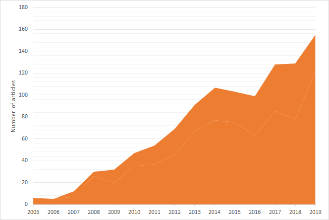
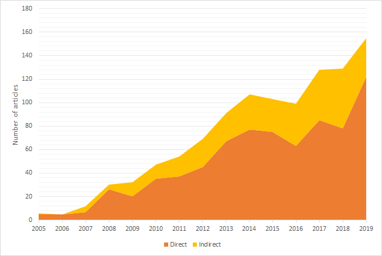
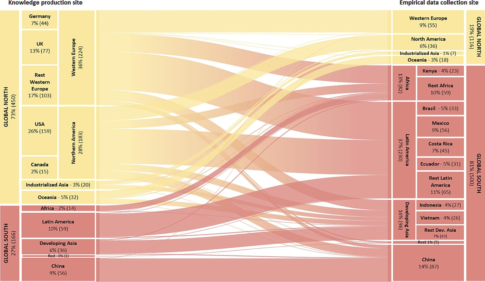
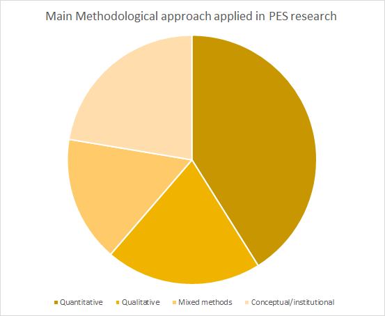
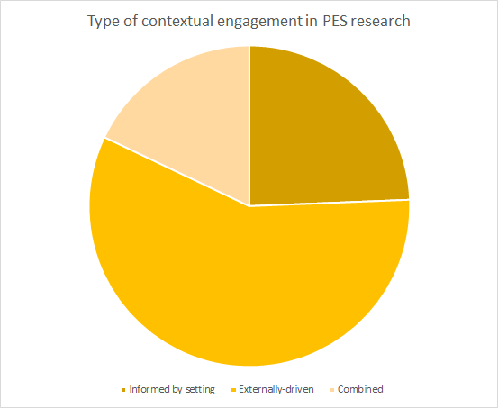
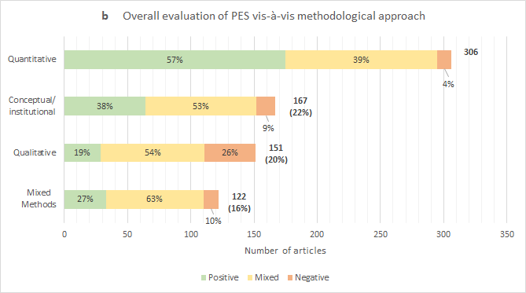
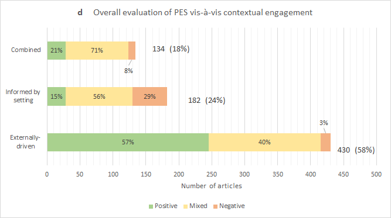
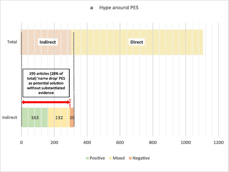
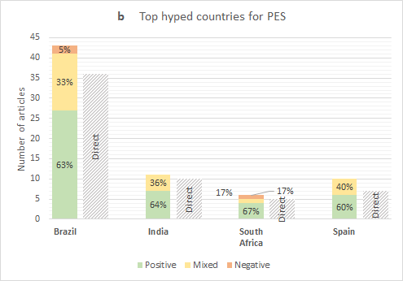

The database comprises 1067 peer-reviewed articles that mention PES in their title, abstract or keywords from only 6 articles in 2005 to 155 articles in 2019.

At the same time, a growing number of these 1067 articles, corresponding to 30% of the database, do not directly theoretically or empirically engage with PES to any extent; they only name drop PES as a potential solution to address political ecological challenges.


41% of all PES studies use quantitative approaches (including randomized control trials, geospatial analyses, framed-field experiments, and contingent valuation or choice experiments).

Externally-driven research approaches, with minimal attention to cultural or grounded realities of the territories where PES gets implemented, have consistently dominated PES research.




In some countries like India, Brazil, South Africa, and Spain there is more hype around the potential of PES schemes than any evidence would justify for those countries
